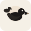
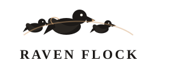

A quiet place to return to
Stillpoint is a calm meditation companion — soft light, gentle pacing, and space to breathe. No streaks to chase. Just a still point when you need one.

Raven Flock
Quiet tools. A reminder you are not forgotten.
Consider the ravens
Eye → flock in reflection → mark.
Intro — continuous push into the eye, then the Raven Flock mark.
Storyboard — still frames
Branch → eye → flock in reflection → mark
Stillpoint is a calm meditation companion — soft light, gentle pacing, and space to breathe. No streaks to chase. Just a still point when you need one.
Raven Flock makes quiet tools and small games — a reminder you are not forgotten, and that provision often arrives before you notice you needed it.
We keep the work calm and human: warm cream, deep navy, a little gold at the edges. Scripture can sit as a footnote or a tagline; the work itself stays invitational, never a sermon.
“Consider the ravens…” — Luke 12:24